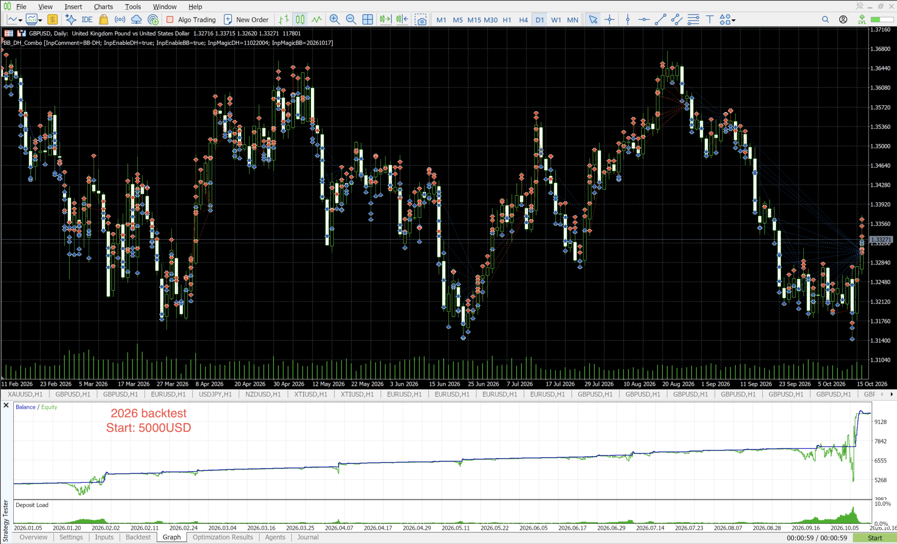

Overview
Twin Reaper Engine runs two grid engines in one EA, each on its own magic number so they operate completely independently. Only the order comment, the two engine on/off switches and the two magic numbers are user inputs — every other parameter is hardcoded to the tuned profile described below.
On each H1 close, a 5-pair US-dollar-strength vote seeds a basket, then adds against the move. The whole basket exits together on take-profit or a give-back trail.
A candle that closes above the upper band stacks a SELL; a close below the lower band stacks a BUY. Each side is its own basket, closed by a give-back trail.
The grid is a safety net, not the plan
Both engines lead with a precision entry. The grid only exists to rescue a bad entry — and a good entry rarely needs it. See the backtest: most baskets closed on the very first order.
👻 Phantom engine — USD-strength grid
Phantom reads a 5-pair US-dollar-strength vote on every H1 candle close, across EURUSD, GBPUSD, AUDUSD, USDCHF and USDCAD. It only acts when all five pairs agree on the dollar's direction:
- USD weakened → EUR/GBP/AUD up and USDCHF/USDCAD down → seed a BUY basket.
- USD strengthened → EUR/GBP/AUD down and USDCHF/USDCAD up → seed a SELL basket.
- Anything less than a unanimous vote → no trade that bar.
Once seeded, Phantom adds against the move every 500 points (martingale ×2),
up to 15 positions in the basket. The basket closes together on a 500-point
take-profit or a give-back trail (arms at 300 points of profit, closes on a
100-point pullback). There is no stop-loss. Phantom holds one basket at a time.
Phantom auto-detects your broker's symbol suffix (e.g. .m, +, pro) for its five signal pairs — just make sure those pairs exist at your broker.
💀 Wraith engine — Bollinger band grid
Wraith watches a Bollinger Band (period 20, deviation 2.0) on the chart timeframe. On each candle close:
- Close above the upper band → open or stack a SELL.
- Close below the lower band → open or stack a BUY.
Each new rung must be at least 200 points from the last same-side order, and lots
grow by a martingale factor of ×1.25 per position, up to 20 positions
per side. The buy and sell sides are separate baskets — each closes on its own give-back
trail (arms at 200 points of basket profit, closes on a 50-point
pullback). There is no stop-loss.
🛡️ Account guard — the circuit breaker
Because both engines run no-stop-loss grids, Twin Reaper Engine has a shared account guard. If either limit is breached, every position from both engines is closed at once and trading halts until the EA is reloaded:
Equity drawdown
Flatten & halt if equity falls 30% from its peak.
Margin level
Flatten & halt if the account margin level drops below 150%.
The guard is your last line of defence against a grid blow-up — but it closes at market, so in a fast move the realised loss can exceed the trigger level.
Backtest — precision in the numbers
Over a sample backtest of 179 baskets, the signal was accurate enough that the vast majority closed on the first or second order — before the grid ever had to stack deeper:

Backtests run on historical data under ideal fill assumptions. They are illustrative only and do not guarantee future performance. A martingale grid can still experience deep drawdown on an unexpected trend.
Default profile
All non-input parameters are hardcoded to this profile. Distances are in points.
👻 Phantom
- Seed lot 0.01
- Add every 500 pts of adverse move
- Max 15 positions / basket
- Martingale ×2.0
- Basket TP 500 pts · no SL
- Trail: start 300 / give back 100
- Signal: H1 close, 5-pair vote
💀 Wraith
- Seed lot 0.01
- Martingale ×1.25 / position
- Max 20 positions / side
- Min 200 pts between rungs
- Bollinger 20, deviation 2.0
- Trail: start 200 / give back 50 · no SL
- Signal: chart-timeframe close
Requirements
- MetaTrader 5 — this is an MT5 Expert Advisor (
Twin_Reaper.ex5). - Hedging account. Both engines run grids on the same symbol, which a netting account can't do.
- Designed for GBPUSD. Attach the EA to a GBPUSD chart — H1 is recommended (it's Phantom's signal timeframe and Wraith's band timeframe follows the chart).
- Phantom's 5 signal pairs must exist at your broker (EURUSD, GBPUSD, AUDUSD, USDCHF, USDCAD). The suffix is auto-detected.
- A VPS / 24-5 uptime is strongly recommended — grids must be managed continuously.
- Adequate balance for the martingale. Keep the start lot tiny and size exposure to your balance.
Installation
-
Copy the EA into MT5
In MetaTrader 5 open File → Open Data Folder, then drop
Twin_Reaper.ex5intoMQL5/Experts/. Restart MT5 or right-click Navigator → Refresh. -
Add the signal pairs to Market Watch
Make sure EURUSD, GBPUSD, AUDUSD, USDCHF and USDCAD are available. Phantom adds them automatically, but they must exist at your broker.
-
Attach to a GBPUSD chart
Open a GBPUSD, H1 chart and drag Twin Reaper Engine onto it. Tick Allow Algo Trading in the dialog, and enable the Algo Trading toolbar button.
-
Choose which engines to run
Use
InpEnablePhantomandInpEnableWraithto run one or both engines. Give each a distinct magic number if you change the defaults. -
Start on demo
Run it on a demo account first to confirm behaviour at your broker, then move to a small live account with tiny lots.
Inputs reference
Only these five are user inputs — everything else is hardcoded to the default profile.
| Input | Default | Description |
|---|---|---|
| InpComment | "Twin Reaper" | Order comment used by both engines. |
| InpEnablePhantom | true | Enable the Phantom engine (USD-strength grid). |
| InpEnableWraith | true | Enable the Wraith engine (Bollinger grid). |
| InpMagicPhantom | 11022004 | Magic number for Phantom's positions. |
| InpMagicWraith | 20261017 | Magic number for Wraith's positions. |
Want a different risk profile (lots, grid step, martingale factor, trail)? Those live in the hardcoded #define block in the source and are tuned as a set — message the author to discuss a custom build.
Risk warning
This is a no-stop-loss, martingale grid EA
It carries a real risk of losing the entire account. Read this section before using it with real money.
- No per-trade stop loss. A strong, sustained trend can keep stacking losing positions.
- Martingale lot progression grows exposure fast and compounds drawdown.
- Baskets close only on take-profit or the give-back trail — floating drawdown can be large before that happens.
- The account guard (30% DD / 150% margin level) is a backstop, not a guarantee — it closes at market, so the realised loss can exceed the trigger.
- Past performance and backtests do not guarantee future results. Backtest thoroughly and run on a demo account first.
- Use money you can afford to lose, keep the start lot tiny, and size exposure to your balance.
Trading leveraged products is high-risk and may not be suitable for everyone. You use this EA entirely at your own risk; the author accepts no liability for any losses.
Questions?
Reach the author directly on Telegram: t.me/trikohung